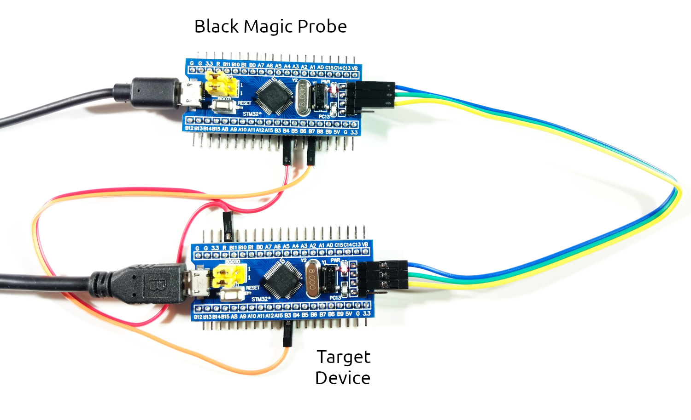

Hello, world!
In the previous chapter we created a debug probe from a Blue Pill, and attached it to another Blue Pill board. In this chapter we will run our first Drone program on the microcontroller.
Rust
If you haven't installed Rust yet, follow the instructions from rustup.rs. Drone is currently available only for Nightly channel of Rust. You need to install it first:
$ rustup toolchain install nightly \
-c rust-src -c rustfmt -c clippy -c llvm-tools-preview \
-t thumbv7m-none-eabi
Not all nightly releases have all components available. The above command will walk backwards in time to find the most recent release with all needed components.
just command
In embedded development often there are various project-specific tasks that are
needed to run from time to time. Therefore we encourage using an excellent Rust
crate just:
$ cargo +stable install just
Just is a command runner inspired by make. Whenever you see a project with
Justfile at the root, run just --list to see all available
commands. Furthermore drone new command will generate a Justfile for you. It
is advisable to put alias j="just" to your shell config, so you could just
type j instead of just.
drone command
The Drone OS project consists of many Rust crates. However there is a single
entry point for it - the drone command-line utility:
$ cargo +nightly install drone
For now you should have all prerequisites and could follow to the next step - generating your first Drone crate.
New project
Let's tell drone to generate a new Drone crate for us. We have to specify the
target MCU family, which is stm32f103 for Blue Pill, the flash memory size,
the RAM size, and the project name.
$ drone new --device stm32f103 --flash-size 128K --ram-size 20K hello-world
$ cd hello-world
The first thing to do inside the project is to install dependencies:
$ just deps
You should also run this task after each Rust update.
Now we assume you have the Blue Pills connected as follows (as described in the previous chapter):

Let's flash our newly created project to the target Blue Pill. If it has to be built first, it could take a while:
$ just flash
A successful result looks like this:

And finally, check the SWO output from the device.
$ just log

If you see an output like above, congratulations! You have successfully set up an environment for developing Drone projects.